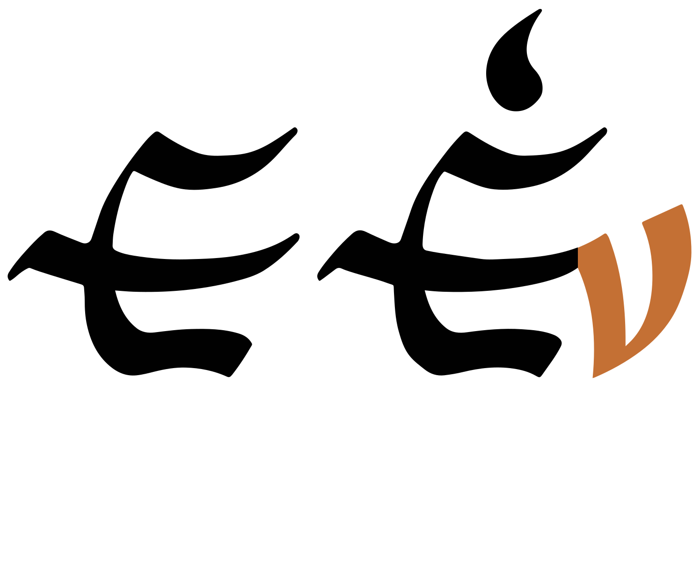
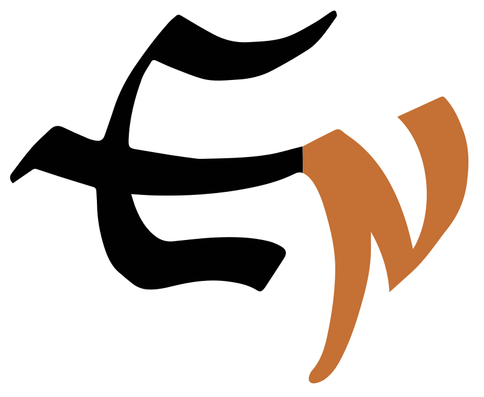
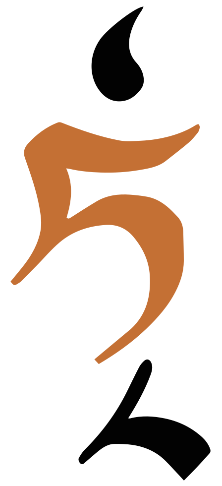
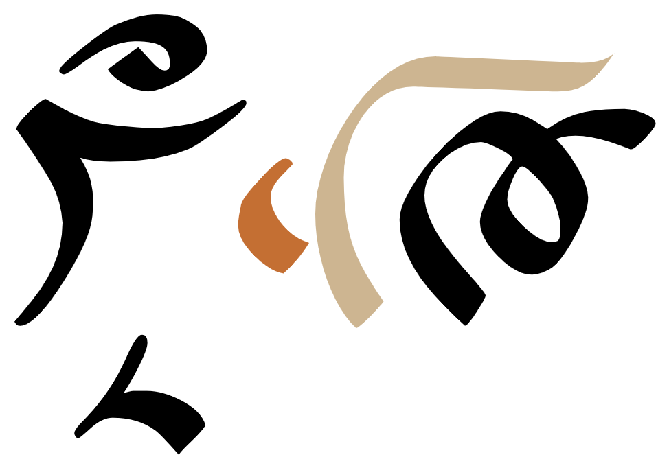
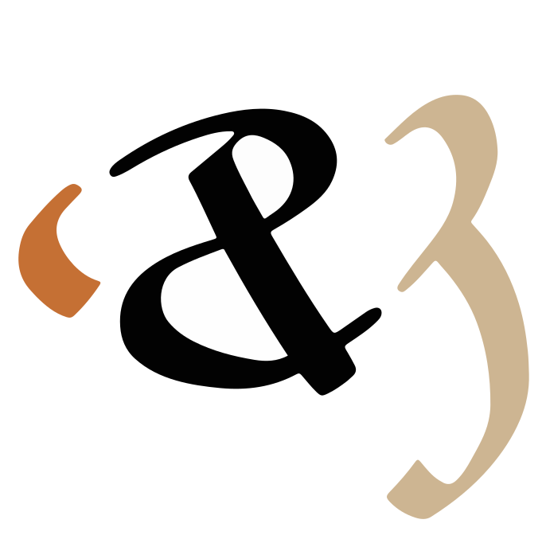
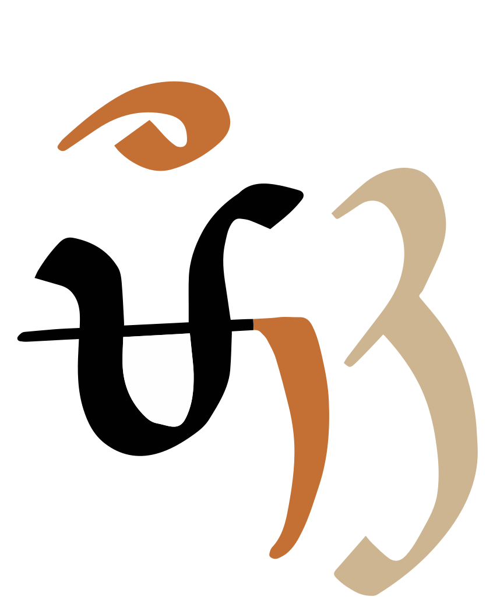

This page brings together basic information about the Lepcha (Róng) script and its use for the Lepcha language. It aims to provide a brief, descriptive summary of the modern, printed orthography and typographic features, and to advise how to write Lepcha using Unicode.
The Lepcha language (natively referred to as Róng) is spoken in Sikkim and in the Darjeeling district of the West Bengal state of India by around 53,000 people@Ethnologue,https://www.ethnologue.com/language/lep/. It is an official language of Sikkim, and is currently taught in schools. The Sikkim Herald is published in various scripts, including Lepcha.
ᰛᰩᰵᰛᰧᰵᰶ
The script was derived from Tibetan writing, with rotated glyphs. It is thought to have been invented around 1720 by the Sikkim king Phyag-rdor rNam-rgyal (“Chakdor Namgyal”). Recent innovations added 3 letters for retroflex sounds, which had previously been written using a sequence of characters.
The Lepcha script is an abugida. Each consonant has an inherent vowel. See the table to the right for a brief overview of features for the modern Lepcha orthography. Each syllable typically contains a base consonant letter followed by one or more combining characters to express vowel sounds and medial and final consonant sounds.
Lepcha text runs from left to right in horizontal lines. Words are separated by spaces. The orthography is unicameral.
Modern Lepcha uses 39 basic consonant letters as syllable onsets. Three retroflex sounds (introduced via Tibetan) used to be written using a sequence of characters that include a medial RA and an optional nukta, but dedicated letters were recently introduced for these sounds.
Lepcha represents medial consonants using diacritics, for -r and -j, but onset clusters that involve -l are represented by 7 dedicated letters. There are 9 syllable-final consonants, all combining marks. Two of the final consonants (both representing the sound ŋ) are rendered to the left of all other syllable components.
Other post-consonant vowels are written using 7 combining marks (vowel signs), all single combining marks. There are no vowel letters.
Lepcha has 3 pre-base glyphs. but no circumgraphs (although, one vowel sign wraps around the left and top sides of the base consonant).
There are no multipart vowels, however another diacritic, ᰶ, is commonly added after all other syllable elements, even though its semantic value is disputed.
Vowel length is not distinctive in Lepcha and not indicated in the written form.
ə following a consonant is normally not written, but is seen as an inherent part of the consonant letter, so kə is written by simply using the consonant letter.
Combining marks used for vowels
ᰀᰪ
kɯU+1C00 LETTER KA, U+1C2A VOWEL SIGN U
Lepcha uses the following dedicated combining marks for vowels.
ᰧ␣ᰪ␣ᰫ␣ᰬ␣ᰨ␣ᰩ␣ᰦ␣ᰶ
Six vowel signs are spacing marks, meaning that they consume horizontal space when added to a base consonant.
The sign RAN
Although 1C36 occurs commonly in Lepcha spelling, it's function appears to be a subject of debate. Plaisier describes it as follows:
Although the original function of the [RAN] sign is still unclear, it is often present in closed syllables, in which case the circumflex sign should be written above the final consonant sign. It has been suggested that the function of the [RAN] is to indicate stress or pitch, in order to distinguish stressable syllables from syllables that never appear in a stressed position, and this hypothesis may well be correct (Plaisier 2003: 28-29, Sprigg 1983: 316). However, because the function of the [RAN] sign is unclear to most writers, nowadays the sign is used by the Lepcha in a variety of ways and opinions vary strongly as
to which is the correct usage.
It is only used over a consonant with an inherent vowel (including the vowel-carrier), or a consonant with ᰧ. It is typed and stored after any final consonant in a syllable.
ᰌᰶ
ᰅᰭᰶ
ᰑᰧᰭᰶ
ᰣᰧᰳᰶ
Standalone vowels
ᰣ
Lepcha represents standalone vowels using the vowel-carrier ᰣ combined with a vowel sign.
ᰣᰦᰀᰶ
ᰊᰣᰤᰪ
There are no independent vowels, but the vowel-carrier without any vowel sign represents ə, the sound of the inherent vowel.
Pre-base vowel signs
ᰀᰧ
kiU+1901 LETTER KA + U+1927 VOWEL SIGN I
Three vowels are represented by a combining character that appears to the left of the consonant onset.
ᰧ␣ᰨ␣ᰩ
The combining mark is always stored after the base consonant. The rendering process places the glyphs relative the base consonant, as needed. Note that the vowel sign is also typed and stored after any medial consonant and before any final-consonant mark, regardless of the positions of those marks when rendered.
Vowel suppression
Lepcha has no virama. A consonant without a following vowel only occurs in syllable-final position, in which case a combining mark is used (see finals).
Vowel sounds to characters
This section maps Lepcha vowel sounds to common graphemes in the Lepcha orthography.
Standalone vowels are shown in the right-hand column. These are all preceded by a glottal stop. Gaps in that column don't necessarily indicate that the combination doesn't occur; it may be just that an example wasn't found.
Click on a grapheme to find other mentions on this page (links appear at the bottom of the page). Click on the character name to see examples and for detailed descriptions of the character(s) shown.
Plain vowels
i
1C27
ᰎᰧ
1C27 1C36
ᰑᰧᰭᰶ
1C23 1C27 1C36
ᰣᰧᰭᰶ
ɯ
1C2A
ᰗᰪᰲᰗᰪᰲ
u
1C2B
ᰌᰫ
1C23 1C2B
ᰣᰫᰳ
e
1C2C in open syllables and before -ŋ and -k.
ᰎᰬ
o
1C28
ᰆᰨ
1C23 1C28
ᰣᰨᰘᰩᰵ
ə
Inherent vowel
ᰊᰣᰤᰪ
1C36 This is a supplement to the inherent vowel. See ran for more details.
ᰅᰭᰶ
1C23 1C36
ᰠᰨᰣᰮᰶ
ɛ
1C2C in closed syllables that don't end in -ŋ or -k.
ᰎᰬᰯ
ɔ
1C29
ᰃᰩ
1C23 1C29
ᰣᰩᰳ
a
1C26
ᰑᰦ
1C23 1C26
ᰣᰦᰝᰥᰬᰳ
Consonants
This orthography has no special features with respect to the following.
Repertoire extensions to cover loan words, etc.
Conjuncts or other shaping related to consonant clusters.
Gemination or consonant lengthening.
Consonant summary table
The following table summarises the main consonant to character assigments.
Retroflex sounds in Lepcha generally come from Tibetan loan words, and originally there were no dedicated letters for writing them. Nowadays they can be written using ᱍ, ᱎ, and ᱏ, but previously there were written using combinations of characters.
The combinations involve 3 consonants followed by a medial -r: kr for ʈ, hr for ʈʰ, and gr for ɖ, but to distinguish them from the normal onset clusters they typically use ᰷ to modify the initial consonant.
The following examples show alternative ways of writing these sounds.
ᰀ᰷ᰥᰬ
ᱍᰬ
ᰝ᰷ᰥᰧ
ᱎᰧ
ᰃ᰷ᰥᰧ
ᱏᰧ
The nukta must always be typed and stored immediately after the initial consonant.
Onsets
ᰥ␣ᰤ␣ ␣ᰏ␣ᰔ␣ᰁ␣ᰄ␣ᰒ␣ᰞ␣ᰖ
Lepcha syllables can begin with a consonant followed by -r-, -j-, or -l-. The combination -rj- is also possible. The first 2 sounds are written in Unicode by adding medial consonant combining marks to the initial consonant.

A combining mark (highlighted) used to indicate a medial -y- sound.show components
ᰀᰀᰤᰭ

Use of 2 combining marks (highlighted) to indicate a medial -ry- sound.
Lepcha is unusual in that combinations of an onset consonant followed by -l- are represented by a number of pre-formed ligature letters, rather than a consonant+combining mark.

A letter (highlighted) used to indicate the onset cluster kl- sound.show components
ᰁᰬᰭ
Finals
ᰱ␣ᰳ␣ᰭ␣ᰮ␣ᰰ␣ᰴ␣ᰵ␣ᰲ␣ᰯ
Syllable-final consonants are represented by the 8 small forms above, which are implemented as combining marks. Final stops are always unvoiced, unreleased and pronounced with a glottal stop.u
ᰀᰊᰪᰭ
ᰈᰬᰲ
ᰕᰩᰰ
The sound ŋ is represented by 2 different combining marks. Following an inherent vowel, ᰴ is used. Otherwise, use ᰵ. This latter mark is unusual in that it occurs on the left side of the syllable-initial consonant, and even to the left of any pre-base vowel sign. It is still typed and stored in order of pronunciation, and the placement is achieved during rendering.


Examples of placement of -ŋ relative to vowel signs. The vowel sign has a light coloured highlight, and the final consonant is shown in the darker highlight.show componentsᰣᰫᰵshow componentsᰛᰬᰰᰈᰩᰵ
Consonant clusters
Lepcha has no conjunct forms for consonant clusters.
Syllable-initial clusters are written using combining marks to represent the medial consonants (see onsets). Mid-word clusters are written using a syllable-final combining mark followed by a full-sized letter (see finals).
Consonant length
Consonant gemination doesn't appear to be common in Lepcha.
Consonant sounds to characters
This section maps Lepcha consonant sounds to common graphemes in the Latin orthography
The middle column in the stops section shows special character for combinations with a medial -l-. The right-hand column shows syllable codas.
Click on a grapheme to find other mentions on this page (links appear at the bottom of the page). Click on the character name to see examples and for detailed descriptions of the character(s) shown.
Stops
p
1C0E
ᰎᰧ
1C0F
ᰏᰭ
1C31
ᰜᰦᰱ
b
1C13
ᰓᰪ
1C14
ᰔᰦ
t
1C0A
ᰊᰃᰥᰤᰫ
1C33
ᰇᰬᰳ
d
1C0C
ᰌᰦᰲᰈᰫ
c
1C06
ᰆᰨ
ʈ
1C4D
ᱍᰬ
1C00 1C37 1C25 in older texts.
ᰀ᰷ᰥᰬ
ɖ
1C4F
ᱏᰧ
1C03 1C37 1C25 in older texts.
ᰃ᰷ᰥᰬ
k
1C00
ᰀᰈᰫ
1C01
ᰁᰨ
1C2D
ᰏᰭ
ɡ
1C03
ᰃᰦᰰ
1C04
ᰄᰧ
ʔ
1C23
ᰠᰨᰣᰮᰶ
Aspirated stops
pʰ
1C10
ᰐᰨ
tʰ
1C0B
ᰋᰫᰭ
cʰ
1C07
ᰇᰨ
ʈʰ
1C4E
ᱎᰧ
1C1D 1C37 1C25 in older texts.
ᰝ᰷ᰥᰧ
kʰ
1C02
ᰂᰫ
Affricates
t͡s
1C17
ᰗᰫᰭ
t͡sʰ
1C18
ᰘᰩ
d͡z
1C19
ᰙᰨ
Fricatives
f
1C11
ᰑᰦ
1C12
ᰒᰬᰳ
v
1C1F
ᰟᰧ
s
1C20
ᰠᰌᰪ
z
1C19
ᰙᰨ
ʃ
1C21
ᰡᰧ
1C20 before i.
ʒ
1C08
ᰈᰬᰲ
h
1C1D
ᰝᰦᰱ
Nasals
m
1C15
ᰕᰧ
1C16
ᰖᰤᰦ
1C2E
ᰓᰦᰮ
n
1C0D
ᰍᰦᰮ
1C30
ᰅᰫᰰ
ɲ
1C09
ᰉᰬᰳ
ŋ
1C05
ᰅᰫ
1C35
ᰠᰪᰵ
1C34 after the inherent vowel.
ᰆᰴ
Approximants & trills/flaps
w
1C22
ᰢᰨᰕᰫ
r
1C1B
ᰛᰪ
1C25
ᰀᰥᰰᰶ
1C32
ᰈᰬᰲ
r̥
1C1D 1C25
ᰝᰥᰨ
l
1C1C
ᰜᰧᰶ
See stops section.
1C2F
ᰚᰬᰯ
l̥
1C1E
ᰞᰨ
j
1C1A
ᰚᰶ
1C24
ᰃᰤᰫ
Encoding choices
This section offers advice about characters or character sequences to avoid, and what to use instead. It takes into account the relevance of Unicode Normalisation Form D (NFD) and Unicode Normalisation Form C (NFC).
Lepcha characters don't have any precomposed vs. decomposed alternatives, but ordering of combining marks is important.
Codepoint sequences
Letters should generally be typed in the order of pronunciation, but there are also ordering rules for additional characters. The order should be as follows.u,577
Type
Example
Code points
Consonants
ᰀ
U+1C00..U+1C23, U+1C4D..U+1C4F
Nukta
᰷
U+1C37
Medial RA
ᰥ
U+1C25
Medial YA
ᰤ
U+1C24
Dependent vowels
ᰧ
U+1C26..U+1C2C
Final consonants
ᰭ
U+1C2D..U+1C35
Ran sign
ᰶ
U+1C36
Note, in particular, that ᰶ is typed and stored after all other combining marks, including the syllable final consonant marks, and is not treated like a vowel sign.
Numbers, dates, currency, etc
Digits
Lepcha has its own set of digits, with a decimal base.
᱀␣᱁␣᱂␣᱃␣᱄␣᱅␣᱆␣᱇␣᱈␣᱉
Text direction
Lepcha text is written horizontally, with lines that flow from top to bottom.
Glyph shaping & positioning
The following features are not found in this orthography.
Cursive joining (ie. joined up like Arabic).
Case distinction, or special transforms to convert between characters.
This section brings together information about the following topics:
font/writing styles;
cursive text;
context-based shaping;
context-based positioning;
letterform slopes, weights, & italics;
case & other character transforms.
Since the letters are all the same height, there tends not to be much variation in height of combining marks, except for ᰶ which fonts tend to move up and down depending on whether the base consonant also carries a final consonant mark as well.
Medial consonants tend to anchor to the preceding onset consonant in slightly different ways.
Special rendering rules are needed to place the pre-base vowel glyphs to the left of the syllable, and to place ᰵ to the left of those. ᰶ is also over the syllable onset consonant, even though it is encoded after vowels that extend to its right.

An example of context-sensitive positioning of glyphs. The final consonant 'n', which is typed and stored last, is rendered over the syllable-initial consonant, even though the medial consonant mark and the vowel sign extend further to the right.Another example of context-sensitive positioning of glyphs. The RAN sign, which is typed and stored last, is rendered over the syllable-initial consonant, and at different heights dependening on the presence or not of a final consonant mark.
Letterform slopes, weights, & italics
tbd
Graphemes
In Lepcha text, grapheme clusters typically correspond to whole syllables. Where combining marks appear, the combination of base and combining mark still fits within the definition of a grapheme cluster.
Grapheme clusters
Base Mark?
Each syllable onset and following combining marks typically constitute a single grapheme cluster.
Basic phrase and section boundaries in Lepcha use ASCII punctuation.
phrase
,
;
:
sentence
.
?
!
᰻
᰼
᰽
᰾
᰿
According to the Unicode Standard, the Lepchas use traditional punctuation marks only when copying the old books. In everyday writing they use common Western punctuation marks such as comma, full stop, and question mark.u,13.12
᰻ may be rendered by a font to look like , the Tibetan shay character.
Observation: In Plaisier's sample texts, ᰿ is used to surround the numbers that introduce each glossed sentence, eg. ᰿᱃᰿.
Bracketed text
(␣)
Lepcha commonly uses ASCII parentheses to insert parenthetical information into text.
Lepcha texts may use quotation marks around quotations. Of course, due to keyboard design, quotations may also be surrounded by ASCII double and single quote marks.
Full justification may be achieved by altering the width of inter-word spaces.
Text spacing
tbd
Baselines, line height, etc.
tbd
Lepcha uses the 'alphabetic' baseline.
Counters, lists, etc.
tbd
Styling initials
tbd
Page & book layout
This section is for any features that are specific to Lepcha and that relate to the following topics:
general page layout & progression;
grids & tables;
notes, footnotes, etc;
forms & user interaction;
page numbering, running headers, etc.


 , the Tibetan
, the Tibetan